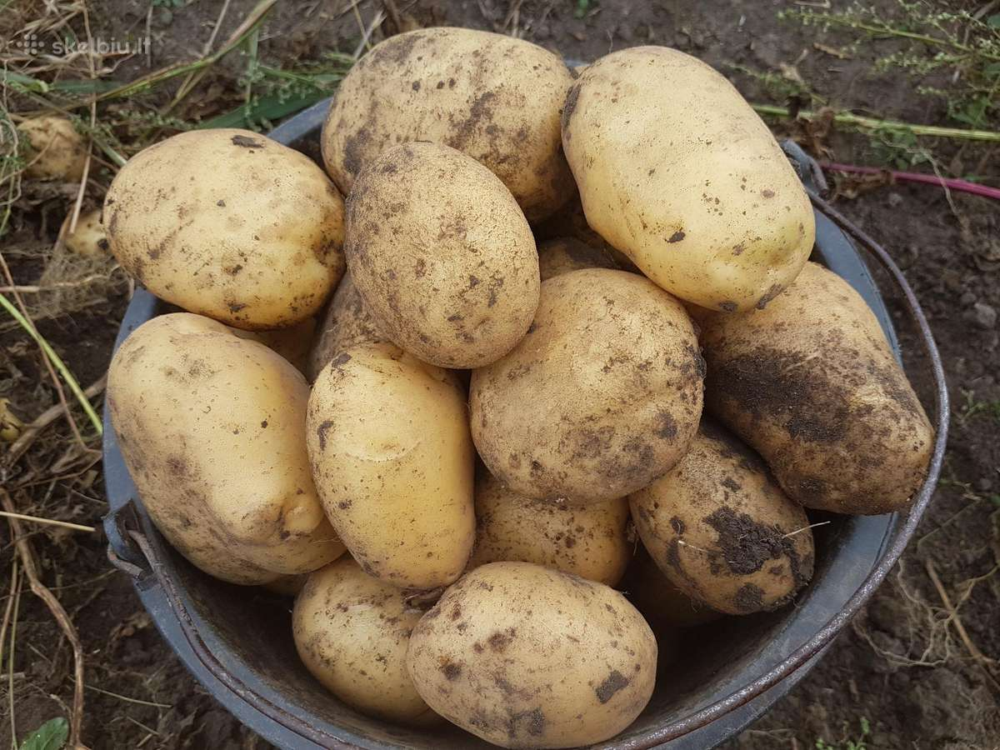

Orkaitėje keptos daržovės: šiltos ir spalvotos salotos ... Daržovės Rodoma 1–12 iš 17 Rūšiuoti pagal: Numatytasis rikiavimas Rikiuoti pagal populiarumą Rikiuoti nuo naujausių Rikiuoti pagal kainą (min → maks) Rikiuoti pagal kainą (maks → min)
Daržovės | Dėžėmis - vaisiai ir daržovės pigiau Daržovės – vienmečiai, dvimečiai ir daugiamečiai žoliniai augalai, kurių įvairios sultingos dalys vartojamos maistui. Mitybos prasme nuo daržovių skiriami vaisiai, kurie dažniausiai auga ant sumedėjusių augalų (medžių, krūmų, krūmokšnių) ir paprastai būna saldūs.
Daržovės, Daržovių patiekalai - Receptai | Patiekalai ORKAITĖJE KEPTOS DARŽOVĖS. 2 burokėliai, priklausomai nuo dydžio supjaustyti į keturias ar daugiau dalių 4 riekės moliūgo 4 morkos, perpjautos išilgai per pusę 2 pastarnokai, perpjauti ...
Daržovės - BARBORA Daržovės ir vaisiai Daržovės (8 5) 230 9309. Kasdien nuo 8 iki 21 val. El. p.: pagalba@barbora.lt. Daržovės ir vaisiai 215. Agurkai ir pomidorai 30; Paprikos ir baklažanai 14; Bulvės, morkos ir kopūstai 20; Svogūnai, porai ir česnakai 8 ...
Daržovės, vaisiai ir grybai | MAISTO PREKĖS | ShopTime.lt ... UAB Saldukas, amžina tradicija, visada pasiūlys įvairiausių prieskonių, prieskonių mišinių, prieskoninių žolelių, konditerijos žaliavų, džiovintų riešutų-vaisių ir daug kitų produktų iš Lietuvos ir viso pasaulio.
DARŽOVĖS - E-gulbelė Tel. +370 5 233 5340 info@auga.lt Nemokamas kokybės telefonas +370 800 11050 AUGA group, AB Konstitucijos pr. 21C, QUADRUM NORTH 08130 Vilnius
Daržovės – Skanaus! RECEPTAI, kurie įkvėps Jus gaminti! Čia jų rasite itin daug iš įvairiausių pasaulio šalių ir vietovių. Geri ir aiškiai aprašyti receptai, taip pat video receptai, kurie padės Jums pasigaminti ir ant stalo patiekti tik pačius skaniausius bei gardžiausius patiekalus! Geriausia vieta mėgstantiems gaminti.
Daržovės | Skelbimai | AgroLietuva.lt Daržovės – vienmečiai, dvimečiai ir daugiamečiai žoliniai augalai, kurių įvairios sultingos dalys vartojamos maistui. Mitybos prasme nuo daržovių skiriami vaisiai, kurie dažniausiai ...
daržovės - išsamiai DELFI.lt UAB Handelshus. Kodas: 221412030. PVM mokėtojo kodas: LT214120314. Naugarduko g. 102, 03160, Vilnius. Telefonas: +37068697707.
Daržovės. Rekvizitai.lt
2020.10.29 08:07

Daržovės. Įmonės. Rekvizitai.lt Detali paieška Įmonių kodai Duomenų rinkmenos TOP įmonės 2020 Pagalba Reklama Langai | Durys Kontaktai
Įmonės
Įmonės Daržovės Rasta įmonių: 98 Vilniuje (25) Kaune (5) Klaipėdoje (1) Šiauliuose (2) Panevėžyje (1) Visi miestai (98) Vilniuje (25) Kaune (5) Klaipėdoje (1) Šiauliuose (2) Panevėžyje (1) Anykščių r. (1) Biržų r. (1) Elektrėnuose (1) Jonavoje (1) Jonavos r. (1) Joniškio r. (1) Joniškyje (1) Jurbarko r. (1) Kaišiadorių r. (1) Kauno r. (10) Kėdainiuose (2) Kėdainių r. (3) Klaipėdos r. (1) Kretingos r. (3) Marijampolėje (4) Mažeikiuose (1) Mažeikių r. (1) Molėtų r. (2) Pagėgiuose (1) Pasvalio r. (1) Plungės r. (1) Radviliškyje (1) Šakių r. (1) Šalčininkų r. (3) Šiaulių r. (4) Šilutės r. (2) Širvintų r. (1) Tauragėje (1) Telšių r. (1) Trakų r. (1) Vilkaviškio r. (1) Vilkaviškyje (1) Vilniaus r. (8) Visi miestai (98) Daugiau miestų... 1 2 3 4 ... 7 Kitas Eurohorecana Maisto produktų pristatymas įmonėms ir gyventojams Adresas: Kirtimų g. 61, LT-02244 Vilnius. Veiklos sritys: maisto produktai; daržovės; didmeninė prekyba; kavinės, klubai, barai, restoranai; kepyklos; konditerija, saldumynai; maisto parduotuvės; mėsa, mėsos produktai; miško gėrybės; sveiki produktai; šaldyti maisto produktai; vaisiai; žuvininkystė, žuvies produktai. EUROHORECANA, UAB pagrindinės veiklos kryptys: Maisto produktų pristatymas gyventojams į namus Maisto produktų tiekimas restoranams, viešbučiams, kavinėms, valgykloms, mokykloms, kebabinėms, įvairioms kitoms maitinimo įstaigoms Maisto žaliavų tiekimas kepykloms, kepyklėlėms, įvairioms maisto gamybos įmonėms... Delikana Didmeninė prekyba maisto produktais Adresas: Taikos pr. 94, LT-51178 Kaunas. Veiklos sritys: mėsa, mėsos produktai; daržovės; didmeninė prekyba; eksportas; gamyba; maisto parduotuvės; mažmeninė prekyba; sveiki produktai. UAB Delikana – didmeninės prekybos maisto produktais įmonė, veiklą pradėjusi 2007 metais. Asortimentą sudaro: ATVĖSINTA MĖSA Atvėsinta paukštiena Atvėsinta kalakutiena Atvėsinta kiauliena UŽŠALDYTA MĖSA ŠALDYTI PUSGAMINIAI SVEIKI BEI EKOLOGIŠKI MAISTO PRODUKTAI BAKALĖJA UAB Delikana klientus aptarnauja visoje... Salpronė Salotų ir šviežių daržovių pusgaminių gamyba Adresas: Kauno g. 15B, Babtai, LT-54334 Kauno r. Veiklos sritys: maisto produktai; daržovės; didmeninė prekyba; eksportas; gamyba; maisto gamyba; vaisiai. Salpronė, UAB veikla – salotų mišinių ir šviežių daržovių pusgaminių gamyba ir didmeninė prekyba. Salotų mišiniai bei įvairiomis formomis pjaustytos daržovės kavinėms, viešbučiams, barams, bei kitoms maitinimo įstaigoms. Daržovės, daržovių pusgaminiai bei prieskoniniai augalai ir vaisiai prekyba, didmeninė prekyba... Česma Adresas: Kirtimų g. 57A, LT-02244 Vilnius. Veiklos sritys: daržovės; didmeninė prekyba; maisto produktai; mažmeninė prekyba; miško gėrybės; sveiki produktai; ūkio prekės; vaisiai. UAB “ČESMA” susikūrė 1997 metais ir specializuojasi prekyboje šviežiais ir džiovintais vaisiais, daržovėmis, riešutais, prieskoniais bei žvakėmis. Šviežios ir kokybiškos produkcijos palankiomis kainomis galima įsigyti atvykus į prekybos sandėlį Viniuje, Kirtimų g. 57A – Jūsų visada laukia platus asortimentas ir... Augma Go Eco, Green day Adresas: Žuvėdrų g. 4, Vydmantų k., LT-97227 Kretingos r. Veiklos sritys: didmeninė prekyba; daržovės; importas; vaisiai. AUGMA - didžiausia vaisių ir daržovių importuotoja bei prekybos įmonė Baltijos šalyse, kuri daugiau nei 25 metus rūpinasi, kad vaisiai ir daržovės atkeliaujantys tiesiai iš augintojų Lietuvoje ir visame pasaulyje parduotuvių lentynas pasiektų švieži, autentiško skonio ir puikios prekinės išvaizdos. Per metus... BGC SERVICE BGCPARDUOTUVE Adresas: A.V.Graičiūno g. 32, LT-02241 Vilnius. Veiklos sritys: maisto produktai; daržovės; eksportas; kavinės, klubai, barai, restoranai. Restoranai ir kavinės, mokyklos, valgyklos, barai ir parduotuvės - visi jie dirba su „BGC SERVICE“ Kodėl „BGC SERVICE“? Nes mes vertiname ir taupome jūsų laiką. Dirbdami su mumis, suprasite, kad vaisių, daržovių tiekimas patikimas, paprastas ir patogus nes patyrusi įmonė komanda žino ko jums reikia! Prekių kokybės... Vilniaus augma Go Eco, Green Day Adresas: V. A. Graičiūno g. 2B, LT-02241 Vilnius. Veiklos sritys: daržovės; didmeninė prekyba; maisto produktai; vaisiai. AUGMA - didžiausia vaisių ir daržovių importuotoja bei prekybos įmonė Baltijos šalyse, kuri daugiau nei 25 metus rūpinasi, kad vaisiai ir daržovės atkeliaujantys tiesiai iš augintojų Lietuvoje ir visame pasaulyje parduotuvių lentynas pasiektų švieži, autentiško skonio ir puikios prekinės išvaizdos. Per metus... Straikas Adresas: Lauko g. 6, Didieji Baušiai, LT-17118 Šalčininkų r. Veiklos sritys: maisto produktai; daržovės; eksportas; gamyba; importas; vaisiai; žemės ūkis, paslaugos. Lietuviškų maisto produktų gamyba ir eksportas. Vaisių ir daržovių perdirbimas. Sulčių gamyba( prekės ženklas - Magnum ). Kūdikių maisto gamyba( prekės ženklas Marmaluzi ). Natūralios beržų sulos surinkimas, konservavimas, pilstymas ir pardavimas( prekės ženklas SipSap ). Brolimo Adresas: Naujoji g. 43, Zujūnų k., LT-14161 Vilniaus r. Veiklos sritys: daržovės; maisto parduotuvės; maisto produktai; mėsa, mėsos produktai. BROLIMO veikla - maisto prekių, konditerijos gaminių, mėsos, mėsos gaminių, žuvies, daržovių, vaisių bei saldumynų mažmeninė ir didmeninė prekyba. Misija – šviežias, kokybiškas ir pirkėjų lūkesčius atitinkantis maistas už prieinamą kainą. Įmonė vykdo prekybą ir aptarnauja klientus iš: * maisto prekių... Lietuvos daržovių augintojų asociacija Adresas: Kauno g. 30, Babtai, LT-54333 Kauno r. Veiklos sritys: daržovės; sąjungos, fondai, asociacijos. Lietuvos daržovių augintojų asociacija – visuomeninė organizacija, atstovaujanti bulvių ir daržovių augintojų interesus, susikūrė 1998 metais. Ji vienija tiek pačius stambiausius, tiek smulkiuosius augintojus (šiuo metu 72 nariai). Jie išaugina apie 70 tūkst. t bulvių ir 50 tūkst. t daržovių. Supleinas Adresas: Žalgirio g. 137-123, LT-08217 Vilnius. Veiklos sritys: daržovės; didmeninė prekyba; mėsa, mėsos produktai; vaisiai. Įmonė užsiima didmenine šaldytos ir atvėsintos mėsos prekyba Europoje. Pasiūlymų asortimentas labai platus: kiauliena, jautiena, vištiena, kalakutiena, aviena, žuvis. Galime pasiūlyti Halal ir Kosher religiniu skerdimu paskerstų galvijų, paukščių mėsos. Nuo 2018 metų UAB SUPLEINAS pradėjo prekiauti ekologiškais... Abukauskų ūkis Raugiam viską Adresas: Zanavykų g. 25H, Žaliakalnio turgus, LT-44142 Kaunas. Veiklos sritys: daržovės; individuali veikla; žemės ūkis, paslaugos. Daržovės iš lietuviško ūkio. Šviežios daržovės. Raugiam viską - rauginti raudoni pomidorai, rauginti žali pomidorai, rauginti agurkai, rauginti česnakai, raugintos paprikos, morkos, kukurūzai, brokoliai, moliūgai, pupelės, šparagai. Austolina Agotos krautuvėlė Adresas: Pakalnės g. 4-2, Prūsaliai, LT-90101 Plungės r. Veiklos sritys: maisto parduotuvės; daržovės; dovanos; gėrimai (alkoholiniai). Esame mažmeninės prekybos įmonė, kurie siekia išskirtinumo tarp konkurentų tuo jog siekiame savo klientams pateikti, kaip įmanoma platesnį prekių asortimentą greito apsipirkimo parduotuvėse Frestus SIGIO UOGOS Adresas: Laukų g. 7, Klibių k., LT-97158 Kretingos r. Veiklos sritys: didmeninė prekyba; daržovės; mažmeninė prekyba; vaisiai. Dreana Adresas: Laisvės pr. 115A-1, LT-06119 Vilnius. Veiklos sritys: chemijos pramonė, gaminiai; daržovės; didmeninė prekyba; gėrimai (alkoholiniai). alkoholinių gėrimų ir maisto produktai didmeninė prekyba Paslaugos žemdirbiams Vertas Adresas: Juodonių g. 58, Juodonių k., LT-54336 Kauno r. Veiklos sritys: daržovės; gamyba; gėrimai (nealkoholiniai); maisto produktai; vaisiai. Sveikos gyvensenos ir saugaus maisto aktualumas šiuolaikinėje visuomenėje paskatino įmonę 2011 metais pakeisti veiklą į vaisių ir daržovių perdirbimą ir konservavimą. UAB „Paslaugos žemdirbiams“, apjungia mokslą ir naujas technologijas bei bendradarbiauja su LAMMC Sodininkystės ir daržininkystės instituto... 1 2 3 4 ... 7 Kitas
Verslo naujienos, ekonomikos aktualijos, straipsniai
Visoje Prancūzijoje skelbiamas karantinas, ribojimus griežtina ir Vokietija 10-29 07:36 Prancūzijos prezidentas Emmanuelis Macronas trečiadienį paskelbė, kad visoje šalyje vėl įvedamas karantinas, siekiant suvaldyti koronaviruso antrąją bangą, kuris plinta nerimą keliančia sparta. Kaip dirbti tvyrant rūkui : principai užtikrinantys stabilumą net ir sudėtingiausiu įmonei laikotarpiu 10-29 00:58 Metų pradžioje dėliojusios strateginius plėtros planus, nuo pavasario dauguma įmonių gyvena neapibrėžtumo sąlygomis, kai sudėtinga remtis ne tik turima patirtimi, patikimais kontaktais, bet ir... Ypatingos svarbos infrastruktūros apsauga nuo kibernetinių grėsmių: ką turime žinoti 10-29 00:38 Ypatingos svarbos infrastruktūros teikiamų paslaugų, tokių kaip elektros energijos, vandens, transporto, finansinių ar ryšio paslaugos, sutrikimai gali turėti tiesioginį ekonominį, socialinį ar... Kitos naujienos
Prisijungti prie katalogo
Kaip įvesti naują įmonę kataloge? Kaip atnaujinti įmonės informaciją?
Apklausa
Partneriai
Valiutų kursai
JAV doleris USD 0,8527 € Svaras sterlingų GBP 1,1030 € Lenkijos zlotas PLN 0,2164 € Rusijos rublis RUB 0,0108 € Baltarusijos rublis BYN 0,3253 € Kinijos juanis CNY 0,1268 € Šveicarijos frankas CHF 0,9352 € Daugiau valiutų kursų Lietuvos bankas, 2020-10-29
Akcijų kainos
General Electric 7,42 +4,51% CBS 40,77 +3,63% Symantec 23,75 +1,45% Red Hat 187,71 0,00% Google 1516,62 -5,46% Facebook 267,67 -5,51% NVIDIA 505,08 -5,75% Xerox 17,23 -6,97% Daugiau akcijų kainų
Flo Health LTU , Domo Solutions , S6P , Nigotex , VILP Solutions, MB , Galius pro , Gera akis , Xendpay EU , Siuvimo kambarys , Sityea , Tvarkingos Bitės , Ventinis , DAFS , Pagauk mėnulį , Konvelka , Aqua historia , Gyvenamųjų namų savininkų bendrija Mažieji Trušeliai , Morenginė , Book projektai , Standart Impressa , Saulgera , Kosmetologės Eglės IĮ , Daveta , 8DC , Hoteltu , Luna trans , Nykštukų akademija , Dizaino audra , Ekosima , Barzdos
Nauji atsiliepimai, skundai apie imones
Verozona, UAB , Audėjo prekybos centras, UAB , Regitra, VĮ , SAULIAUS VIKŠRAIČIO PLASTINĖS CHIRURGIJOS CENTRAS, UAB , Kramsa, MB , Baltijos ir Amerikos terapijos ir chirurgijos klinika, UAB , Memorus, MB , Apdailos spektras, MB , KIKA INVEST LT, UAB , Mano Būsto priežiūra, UAB , Orange style, UAB , UAB Erikos Grožio Salonas , UAB Ap Trade , Valdema, UAB , Ave Vita klinika, UAB , Eshopwedrop Baltics, UAB , UAB Albista , Lidl Lietuva, UAB , Tele2, UAB , Lietuvos paštas, AB , Alrimda, UAB , Lietuvos paštas darbuotojų profesinės sąjungos Šalčininkų filialas, AB , Evaldo daržovės, UAB , Granex, UAB , Hollister Lietuva, UAB , Asistenta LT, MB , Rolfmeta, UAB , Kasiliūnas, MB , Mureta, UAB , Hanztransa, UAB